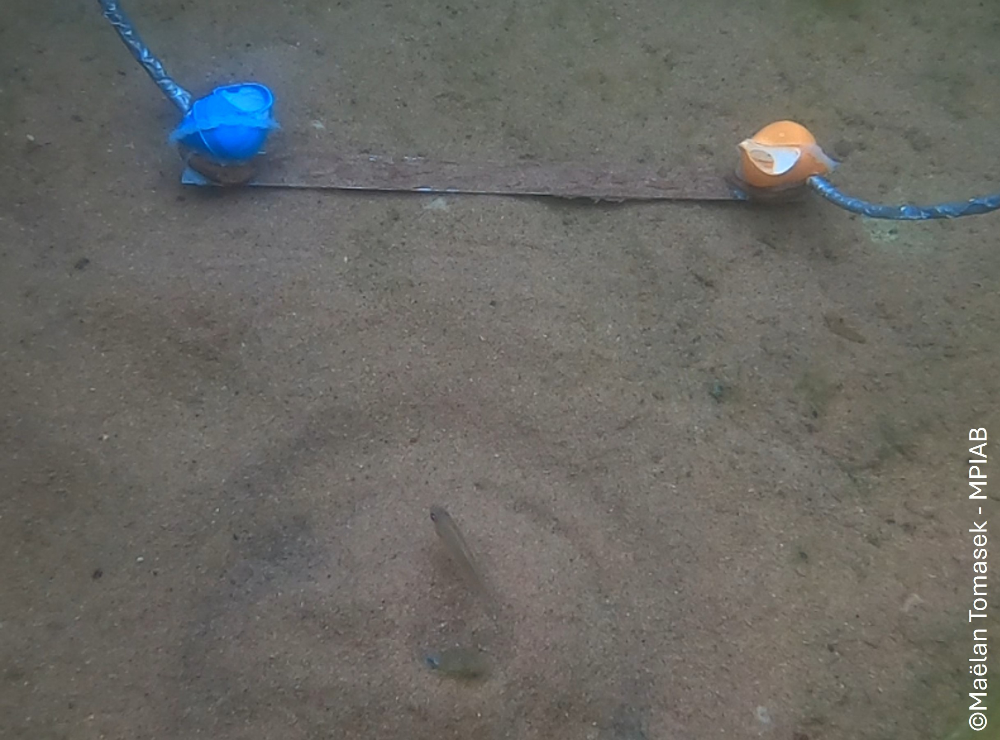

À propos de mes recherches
Mes recherches visent à mieux comprendre les intelligences animales. J'étudie la cognition animale, c’est-à-dire à la manière dont les animaux perçoivent leurs mondes physiques et sociaux et agissent au sein de leur environnement. Pour cela, j’ai eu la chance de travailler avec plusieurs espèces et de mener une partie de ces recherches en milieu naturel.
En étudiant la cognition sur le terrain et en laboratoire, je cherche à comprendre comment et pourquoi les capacités cognitives évoluent, et comment elles sont façonnées par l’écologie, la socialité et l’expérience individuelle.
Je suis également très investi dans l’éthique et le bien-être animal. Je suis convaincu qu’une science rigoureuse et un traitement respectueux des animaux sont pleinement compatibles.
Découvrez mes recherches ci-dessous !
Actualités
Avril 2026
🏠️🐟️ RENTRER CHEZ SOI
Est-ce que les poissons peuvent facilement retrouver le chemin de leur maison ?
C'est la question que nous avons posée dans cette étude menée par la brillante Zoë Goverts. Elle a comparé trois espèces de cichlidés du lac Tanganyika vivant dans des coquillages et a montré qu'elles n'étaient pas toutes capables de rentrer aux coquillages qui leur servent de maison. De plus, certaines espèces semblent préférer s'orienter avec des repères physiques, alors que d'autres non. Je suis très honoré d'avoir fait partie de ce projet !
Et vous, est-ce que vous retrouvez toujours votre chemin ? Et comment ?
Lisez l'article en anglais ici →Janvier 2026
🐦⬛🎶💦 CHANTER SOUS LA DOUCHE
Cette fois, les corbeaux freux chantent sous la douche !
Dans cette incroyable expérience menée par Killian Martin, des corbeaux freux ont eu l'occasion de se placer sous des douches sonores et de chanter en rythme avec les bruits qui en émanaient. Certains corbeaux ont montré des chants intéressants, adaptant le rythme de leurs vocalisations au rythme des douches !
Je sus très heureux d'être un co-auteur sur cet article qui montre encore une fois que l'on sous-estime largement les capacités de chant des corbeaux.
Lisez l'article en anglais ici →Août 2025
🐟️👀🐟️ OBSERVER OU NE PAS OBSERVER
Est-ce que les poissons peuvent apprendre en regardant les autres ?
Pour répondre à cette question, nous avons testé trois espèces de cichlidés vivant dans des coquillages du lac Tanganyika. Ces espèces sont de petits poissons qui vivent dans de grandes coquilles vides au fond du lac. Tout d'abord, nous les avons entraînés à entrer dans des coquillages colorés pour obtenir une récompense alimentaire. Ensuite, nous les avons fait s'observer les uns les autres pour voir s'ils prenaient en compte les décisions des autres individus.
Ils ont appris à s'approcher d'un grand et effrayant appareil expérimental plus vite en observant les autres, mais ils n'ont pas utilisé l'information sociale pour choisir une couleur spécifique. Et vous, préférez-vous vous fier à ce que vous savez ou à ce que vous voyez ?
Lisez l'article en anglais ici →
Février 2025
🤿🐠 LES POISSONS RECONNAISSENT LES PLONGEURS
Quand vous regardez des poissons dans la mer, est-ce que vous vous êtes déjà demandés s'ils vous regardaient également ? Ils peuvent vous voir, c'est sûr, mais ils ne peuvent pas apprendre à vous connaître, pas vrai ? Ils ne peuvent pas vous reconnaître. Pas vrai ? Pas vrai ?
Plusieurs récits anecdotiques suggèrent que si, ils le peuvent, et nous l'avons finalement testé expérimentalement. Très rapidement, des poissons sauvages ont appris à reconnaître des plongeurs individuellement et à suivre un "gentil" plongeur (celui qui leur donne à manger, bien sûr).
Voilà quelques questions pour vous : Êtes-vous surpris·e que des poissons puissent reconnaître des humains individuellement ? Est-ce que cela change la façon dont vous voyez les poissons ? Pourquoi ?
Regardez la vidéo ci-dessous pour comprendre l'expérience !
Lisez l'article en anglais ici →Juin 2024
🐌⚔️🐠 POISSON VS POISSON VS ESCARGOTS
On l'a encore fait ! Nous avons testé si les poissons qui construisent des bowers dans le lac Tanganyika pouvaient contrôler leur envie de retirer des coquilles d'escargots de leurs bowers. Mais cette fois, nous avons testé une nouvelle espèce: Cyathophraynx furcifer.
Cette nouvelle espèce était pire qu'Aulonocranus dewindti en matière de contrôle de soi. Cette différence de contrôle inhibiteur pourrait être liée aux différences de construction des bowers.
Est-ce que ces deux espèces vont pouvoir mettre de côté leurs différences pour leur haine commune des escargots ? Vont-elles collaborer ? Vont-elles se battre ensemble ? La guerre des escargots a tout juste commencé !
Lisez l'article en anglais ici →
Octobre 2023
🐌🐟️ ESCARGOT-AWAY !
Avez-vous déjà eu un escargot dans votre lit ? Si oui, vous êtes soit français·e, soit un poisson qui a participé à nos expériences.
Nous avons étudié une magnifique espèce de poisson dans le lac Tanganyika: Aulonocranus dewindti. Les mâles de cette espèce construisent des structures de sable appelées bowers pour attirer les femelles. Et ils détestent quand leur bower est sale ! L'ennemi public numéro un : les escargots.
Nous avons montré que si une coquille d'escargot et un caillou sont placés dans leur bower, ils retirent toujours la coquille en premier. Nous avons ensuite testé s'ils avaient assez de contrôle de soi pour s'abstenir de le faire et apprendre à retirer le caillou en premier. Le moins que l'on puisse dire est que ce n'était pas facile pour eux ! Mais certains l'ont fait. Pensez à eux la prochaine fois que vous trouverez un escargot et un caillou dans votre lit.
Lisez l'article en anglais ici →
Février 2023
🐦⬛🎶💦 CHANTER DANS LE BAIN
Vous pensez que les corbeaux ne savent pas chanter ?
Dans cette étude, nous montrons que les corbeaux chantent et qu'ils aiment même chanter au-dessus de gros bruits sourds - comme le son de leur bain qui se remplit d'eau ! Plus impressionnant encore, ils peuvent synchroniser leurs vocalisations au rythme du bruit de l'eau. Nous ne sommes pas les seuls à chanter dans nos salles de bain !
Lisez l'article en anglais ici →
Travaux académiques
Publications dans des revues scientifiques
Comparative spatial cognition in wild Tanganyikan cichlids: navigation performance varies with home range and shelter availability.
Animal Cognition
Rooks ( Corvus frugilegus ) can show spontaneous vocal flexibility when exposed to dynamically changing rhythmic sounds.
Animal Cognition
Experimental study of social learning in three wild shell-dwelling Tanganyikan cichlids that vary in sociality.
International Journal of Comparative Psychology
Wild fish use visual cues to recognize individual divers.
Biology Letters
Differences in inhibitory control in two species of Tanganyikan bower-building cichlids contrasting in building flexibility.
Ecology & Evolution
Cognitive flexibility in a Tanganyikan bower-building cichlid, Aulonocranus dewindti .
Animal Cognition
Spontaneous vocal coordination of vocalizations to water noise in rooks ( Corvus frugilegus ): an exploratory study.
Ecology and Evolution
Thèses
The evolution of cognitive abilities in an adaptive radiation model: Tanganyikan cichlids. (Évolution des capacités cognitives au sein d'un modèle de radiation adaptative : les cichlidés du lac Tanganyika)
🏆 Prix de thèse de la SFECA (Société Française pour l'Étude du Comportement Animal)Impact de la santé en recherche comportementale et cognitive : focus sur les organismes aquatiques. (Impact of health in behavioural and cognitive research: focus on aquatic organisms)
Présentations orales
"Wild cognition: is something fishy with traditional evolutionary theories of cognition?"
Invited seminar, School of Biological Sciences, Monash University, Australia (2026)
"Decision-making strategies of two related fish species diverge under increased perceptual load"
Congress of the French Society for the Study of Animal Behaviour SFECA (2025)
🏆 Meilleure présentation étudiante"How may fish help us navigate the troubled waters of animal cognition?"
Invited seminar — Behavioural Ecology Recherche Group, Monash University (2024); Behavioural, Ecology and Evolution of Fishes Recherche Group, Macquarie University (2024); Behaviour and Biomechanics Recherche Group, Oxford University (2025)
"Inhibitory control in Tanganyikan bower-building cichlids covaries with bower complexity"
Congress of the International Society for Behavioural Ecology ISBE (2024)
"Evolution of cognitive abilities in an adaptive radiation model: cichlids of Lake Tanganyika"
Invited seminar, Early-Career Rechercheers Discord group, SFECA (2024)
"Growing wild: Fish cognition in the field"
Invited seminar, Department of Aquaculture and Fish Biology, Hólar University, Iceland (2024)
"Pubescent teenagers or Tanganyikan cichlids? Cognitive experiments with unmotivated wild fish"
ASAB Behaviour Congress, Bielefeld, Germany (2023)
🏆 Meilleure présentation étudiante"Cognitive flexibility in a wild Tanganyikan cichlid, Aulonocranus dewindti "
Congress of the French Society for the Study of Animal Behaviour SFECA (2023)
"Spontaneous vocal coordination of vocalisations in rooks"
Congress of the French Society for the Study of Animal Behaviour SFECA (2019)
Posters scientifiques
"In turbid waters: ethology faced with ethical and health problematics with aquatic animals used in research"
Congress of the French Society for the Study of Animal Behaviour SFECA (2023)
"Understanding the evolution of cognition in the wild: Tanganyikan cichlids as a model system"
Symposium of the Max Planck Institute of Animal Behaviour, Germany (2022)
Engagement scientifique
Membre du CA, association Ethosph'R (2025–aujourd'hui)
Association scientifique pour le bien-être animal et l'initiation à l'éthologie.
Membre de l'organisation pré-congrès SFECA 2025 "Éthique en éthologie"
Conférences sur la diversité, équité et inclusion, bien-être animal, et impacts écologiques des pratiques de recherche. Programme →